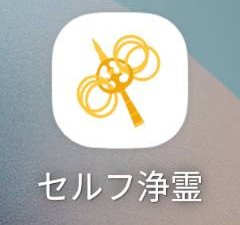
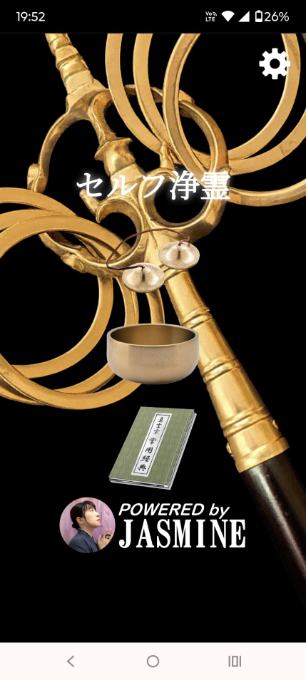
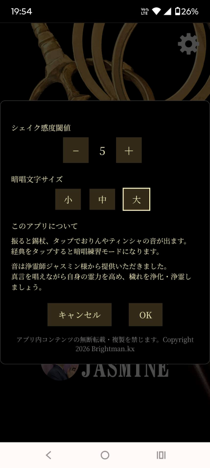
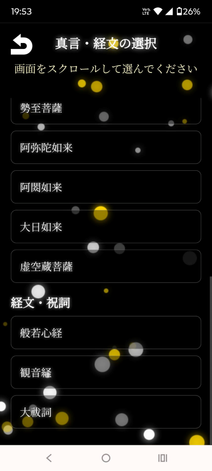
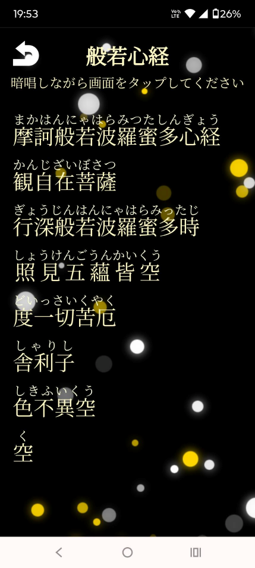

形にとらわれず浄化浄霊に取り組んで自分を変え、周りを変えていこうとする方々を応援します。
能力ある方にお願いするのも良いですが、自ら日々実践していくと効果も大きいです。
初めての方々、慣れない方々への助けになるツールやヒントを提供していきます。
真言やお経を暗記しお唱えに集中するスマホアプリです。自身の声で唱えて霊力を高め、穢れを浄化していきましょう。
振ると錫杖、タップでおりんやティンシャの音が鳴ります。経典をタップすると、経文の一部が隠れて記憶を促す暗唱モードになります。音は浄霊師ジャスミン様より提供頂きました。師のお唱え動画も参考にしましょう。
Webアプリはブラウザで動作しますが、スマホのホーム画面に追加した方が素早く開けます。ネイティブアプリはAndroidスマホ専用です。錫杖の反応を最適化しています。





2026/02/01 : 十三仏真言に制限したWebAppをGitHubにてデプロイ。
2026/03/14 : 3軸合成＋ゼロクロス検出仕様のAndroidApp.v2.0をGitHubReleasesにて公開。
※現在構想中です。リクエストやアイデアをお寄せください。
師が公開している写経手本は、巷にある手本よりも文字が大きく勢いがあって書き易いです。
写経はキレイに書く事がゴールではなく、文字や意味を内面に浸透させるものだと感じます。 先ずはなぞり書きから始める事をお薦めします。
なぞり書きに慣れてくると、雑念が湧いてくる事もあります。集中せず他所事を考えながら手を動かしてしまう事もあります。
そんな時は意図的になぞり書きを止め、唱えながら書いてみましょう。自身の集中度のバロメータにもなります。
上記お手本用の空白のマス目を準備しましたので、下敷きに活用ください。
紙は使い慣れれば何でも良いと思いますが、私は1枚20円程度の写経用紙を使っています。習字半紙よりも大きいので大きな文字を書けること、裏へ滲んで手本を汚すこともありません。
前述の手本はA3サイズで印刷すれば丁度良いです。
私も当初は巷の写経手本を利用していた為、キレイな書体をなぞるのに苦労し、様々な筆を試しては慣れずにいました。
ですが師の手本に代えて以降、筆に気を遣う必要はなくなりました。100円均一の筆を愛用中です。
Seria 学校書写用 毛筆 細筆（白毛）百十円
（工事中）